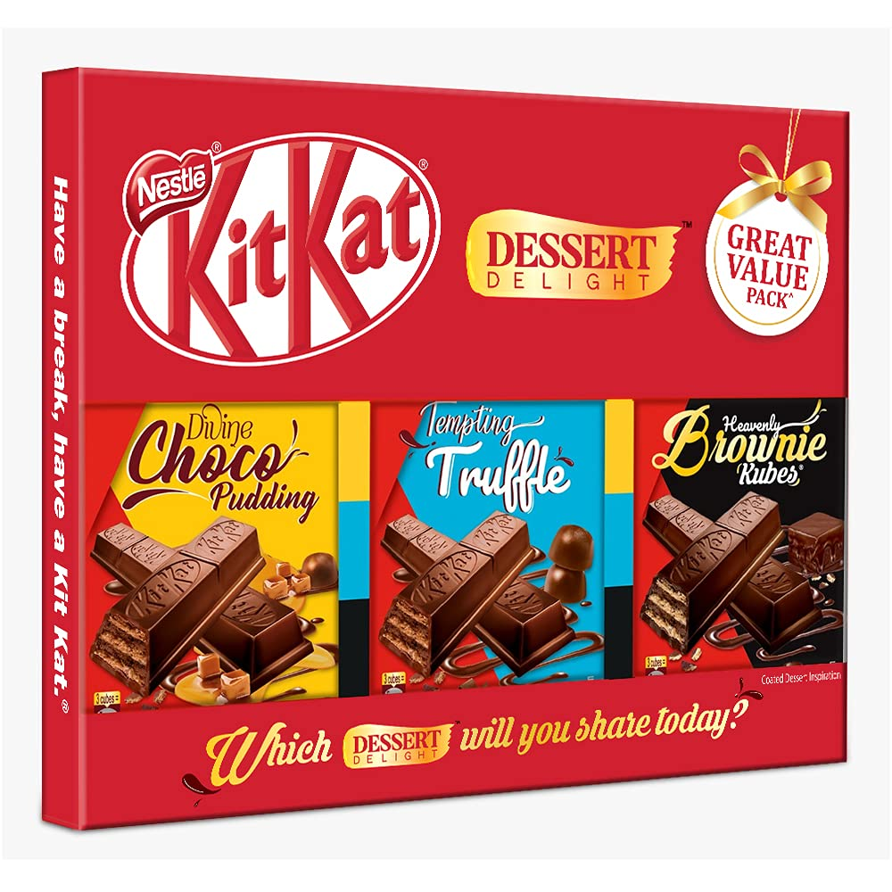

| Name |
Weight/Volume |
Description |
Ingredients Contents |
Image |
| Oreo |
372g |
Oreo is one of the most famous and beloved cookie brands in the world, known for its signature combination of two crunchy chocolate wafer cookies sandwiching a creamy, sweet filling. The iconic "Oreo cookie" features a rich, slightly bittersweet chocolate flavor from the wafers, which perfectly complements the smooth, sweet vanilla-flavored cream center. Oreo cookies are not only enjoyed as a snack but also used in baking, in milkshakes, or as part of desserts like ice cream or cheesecake. |
sugar, unbleached enriched flour, palm oil, soybean and/or canola oil, cocoa, high fructose corn syrup, baking soda, salt soy lecithin, chocolate, artificial flavor |
|
| Ferrero Rocher |
525g |
Ferrero Rocher is a luxurious chocolate confection that has become synonymous with premium quality and indulgence. Each Ferrero Rocher consists of a whole hazelnut encased in a thin, crispy wafer shell, filled with a creamy hazelnut praline filling. The entire treat is then coated in a smooth layer of milk chocolate and rolled in chopped hazelnuts, giving it a delightful crunch with each bite. |
milk chocolate, hazelnuts, cocoa, sugar, vegetable fat, wheat flour, and lecithin. |
|
| Hershey's |
765g |
Hershey's is one of the most iconic and beloved chocolate brands in the world, known for its smooth, creamy milk chocolate bars and a variety of other chocolate treats. The Hershey’s Milk Chocolate Bar is the flagship product, featuring a smooth and creamy texture with a mild, sweet flavor. The chocolate is made with high-quality milk and cocoa, creating a rich taste that is loved by millions of people around the world. |
sugar, cocoa butter, milk, etc. |
 |
| Haribo Goldbears Sour |
127g |
A tangy twist on the classic Haribo Goldbears gummy candy. These gummy bears are coated with a sour sugar crystal dust, giving them a tart and zesty exterior that contrasts with their sweet, chewy interior. Each bear is bursting with fruity flavors, such as lemon, orange, raspberry, and strawberry, but with an added sour kick that gives them a more intense, mouth-puckering taste. |
glocose syrup, sugar, gelatin, dextrose, citric acid, artificial and natural flavor, palm oil, palm kernel oil, carnauba wax, white beeswax, yellow beeswax |
|
| Stick-O |
380g-850g |
Stick-O is a popular snack manufactured by the brand Britannia, known for its delicious chocolate-coated biscuit sticks. The treat consists of crunchy, crispy biscuit sticks covered in a rich and smooth layer of milk or dark chocolate, offering a perfect balance of texture and flavor. The biscuit inside is light and crunchy, while the chocolate coating provides a creamy, indulgent experience. |
wheat flour, refined sugar, rice flour, cocoa powder, chocolate aroma, iodized salt, milk powder, vegetable oil |
|
| Milky Knots |
28g |
Milky Knots is a delicious, creamy confection made with soft milk chocolate that is typically twisted into a knot-like shape, offering a delightful bite-sized treat. These sweet candies combine a smooth, velvety milk chocolate exterior with a rich, melt-in-your-mouth interior. The knot shape adds an interesting texture, giving each piece a satisfying combination of softness and a slight chewiness. |
pretzels, chocolate, vegetable fats |
|
| KitKat |
150g |
It consists of layers of crispy wafer covered in a smooth, creamy milk chocolate coating. The iconic shape of the KitKat bar is divided into segments, making it easy to break off and share, which is reflected in the brand's famous slogan, "Have a break, have a KitKat."
The classic KitKat features four wafer fingers, but over the years, a variety of different flavors and variations have been introduced, including dark chocolate, white chocolate, and special regional flavors like matcha, strawberry, and even wasabi. |
sugar, cocoa, milk, flour, and other flavorings |
 |
| M&M's |
30g-37g |
M&M's are colorful, bite-sized candy-coated chocolates produced by Mars, Incorporated. The candy has a smooth, milk chocolate center that is coated with a crunchy, colorful candy shell. The candy shell is often marked with the letter "M" on it, which is where the candy gets its name. |
sugar, chocolate, milk, cocoa butter, other ingredients |
|
| Pocky Stick |
40g |
a crispy biscuit stick that's dipped in chocolate. It's an easy to share snack that can be enjoyed anytime. Or simply relax on the couch and share Pocky with that special someone. |
Wheat flour, sugar, chocolate liquor, blend of vegetable oils, whole milk powder, cocoa butter, salt, artificial flavors, yeast, soy lecithin |
|
| Cookie Heaven |
200g |
Cookie Heaven feels like a dream come true. Every corner is a delightful discovery, offering a sense of comfort and happiness with every sweet treat. Whether you're enjoying a cookie with a glass of milk or exploring new, inventive flavors, it's the ultimate destination for anyone who believes in the magic of cookies. |
|
|